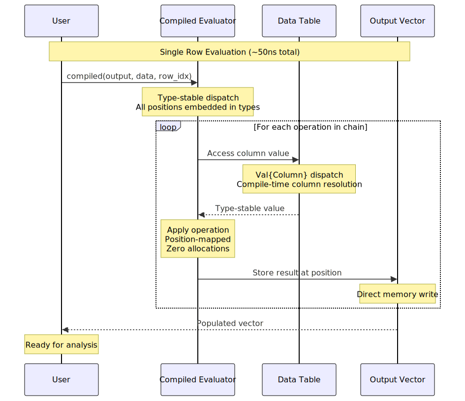

Performance Tips
This guide covers best practices for achieving maximum performance with FormulaCompiler.jl.
For basic performance patterns, see Basic Usage. For advanced optimization techniques, see Advanced Features.
Core Performance Principles
FormulaCompiler.jl achieves zero-allocation performance through:
- Compile-time specialization: Move expensive computations to compile time
- Type stability: Ensure all operations are type-predictable
- Memory reuse: Pre-allocate and reuse output vectors
- Efficient data structures: Use column tables for optimal access patterns
- Low-allocation automatic differentiation: Preallocation and specialization minimize AD memory overhead
Automatic Differentiation: FormulaCompiler.jl provides ForwardDiff-based derivatives with small, bounded allocations per call, and a finite-difference backend with zero allocations. Choose the backend per workload and accuracy needs.
For a detailed understanding of how compile-time specialization is implemented, including the use of metaprogramming for complex formulas and derivative computation, see Metaprogramming.
Runtime Execution Flow
Here's what happens during each evaluation:

Pre-compilation Best Practices
Compile Once, Use Many Times
# Good: Compile once
compiled = compile_formula(model, data)
row_vec = Vector{Float64}(undef, length(compiled))
# Use many times (zero allocations)
for i in 1:1000
compiled(row_vec, data, i % nrow(data) + 1)
# Process result...
end
# Bad: Compile every time
for i in 1:1000
result = modelrow(model, data, i % nrow(data) + 1) # Compiles and allocates
endData Format Optimization
using Tables, DataFrames
df = DataFrame(x = randn(10000), y = randn(10000))
# Best: Column table format (convert once)
data = Tables.columntable(df) # Convert once
compiled = compile_formula(model, data)
# Benchmark the effect of data format
using BenchmarkTools
@benchmark $compiled($row_vec, $data, 1) # Preferred pathMemory Management
Pre-allocation Strategies
# Pre-allocate output vectors
compiled = compile_formula(model, data)
row_vec = Vector{Float64}(undef, length(compiled))
# For batch processing
n_rows = 1000
batch_matrix = Matrix{Float64}(undef, n_rows, length(compiled))
# Reuse across operations
for batch_start in 1:n_rows:total_rows
batch_end = min(batch_start + n_rows - 1, total_rows)
# Evaluate each row in the batch
for i in batch_start:batch_end
idx = i - batch_start + 1
compiled(view(batch_matrix, idx, :), data, i)
end
endMemory Layout Optimization
# For repeated operations on the same rows
function optimized_repeated_evaluation(compiled, data, row_indices, n_repetitions)
n_rows = length(row_indices)
n_cols = length(compiled)
# Pre-allocate everything
results = Array{Float64, 3}(undef, n_repetitions, n_rows, n_cols)
row_vec = Vector{Float64}(undef, n_cols)
for rep in 1:n_repetitions
for (i, row_idx) in enumerate(row_indices)
compiled(row_vec, data, row_idx)
results[rep, i, :] .= row_vec
end
end
return results
endBenchmarking and Profiling
Basic Performance Testing
using BenchmarkTools
function benchmark_formula_compilation(model, data)
# Benchmark compilation
compilation_time = @benchmark compile_formula($model, $data)
# Benchmark evaluation
compiled = compile_formula(model, data)
row_vec = Vector{Float64}(undef, length(compiled))
evaluation_time = @benchmark $compiled($row_vec, $data, 1)
return (compilation = compilation_time, evaluation = evaluation_time)
end
# Run benchmark
results = benchmark_formula_compilation(model, data)
println("Compilation: ", results.compilation)
println("Evaluation: ", results.evaluation)Allocation Detection
function check_zero_allocations(compiled, data, n_tests=1000)
row_vec = Vector{Float64}(undef, length(compiled))
# Warm up
compiled(row_vec, data, 1)
# Test for allocations
allocs_before = Base.gc_alloc_count()
for i in 1:n_tests
compiled(row_vec, data, i % nrow(data) + 1)
end
allocs_after = Base.gc_alloc_count()
if allocs_after > allocs_before
@warn "Detected $(allocs_after - allocs_before) allocations in $n_tests evaluations"
else
println("✓ Zero allocations confirmed for $n_tests evaluations")
end
end
check_zero_allocations(compiled, data)Performance Profiling
using Profile, ProfileView
function profile_performance(compiled, data, n_evaluations=100_000)
row_vec = Vector{Float64}(undef, length(compiled))
# Profile execution
Profile.clear()
@profile begin
for i in 1:n_evaluations
compiled(row_vec, data, i % nrow(data) + 1)
end
end
# Analyze results
ProfileView.view() # Opens interactive profile viewer
endFormula-Specific Optimizations
Simple vs Complex Formulas
# Simple formulas are fastest
simple_model = lm(@formula(y ~ x + z), df)
simple_compiled = compile_formula(simple_model, data)
# Complex formulas still achieve zero allocation but are slower
complex_model = lm(@formula(y ~ x * group * treatment + log(z) + sqrt(abs(w))), df)
complex_compiled = compile_formula(complex_model, data)
# Benchmark both
@benchmark $simple_compiled($row_vec, $data, 1)
@benchmark $complex_compiled($row_vec, $data, 1)Categorical Variable Optimization
using CategoricalArrays
# Ordered categoricals can be more efficient
df.ordered_group = categorical(df.group, ordered=true)
# Use efficient contrast coding
contrasts_dict = Dict(:group => DummyCoding())
model_with_contrasts = lm(@formula(y ~ x + group), df, contrasts=contrasts_dict)Function Optimization Tips
# Some functions are more efficient than others
fast_functions = [
@formula(y ~ log(x)), # Fast
@formula(y ~ exp(x)), # Fast
@formula(y ~ sqrt(x)), # Fast
@formula(y ~ x^2), # Fast
@formula(y ~ abs(x)) # Fast
]
slower_functions = [
@formula(y ~ sin(x)), # Slower
@formula(y ~ cos(x)), # Slower
@formula(y ~ x^3.5) # Slower (non-integer powers)
]Large Dataset Strategies
Chunked Processing
function process_large_dataset_efficiently(model, data, chunk_size=10_000)
compiled = compile_formula(model, data)
n_rows = Tables.rowcount(data)
n_cols = length(compiled)
# Pre-allocate chunk matrix
chunk_matrix = Matrix{Float64}(undef, chunk_size, n_cols)
results = Vector{Matrix{Float64}}()
for start_idx in 1:chunk_size:n_rows
end_idx = min(start_idx + chunk_size - 1, n_rows)
actual_chunk_size = end_idx - start_idx + 1
# Zero-allocation batch evaluation
for (chunk_row, data_row) in enumerate(start_idx:end_idx)
compiled(view(chunk_matrix, chunk_row, :), data, data_row)
end
# Store results (this allocates, but unavoidable for storage)
chunk_view = view(chunk_matrix, 1:actual_chunk_size, :)
push!(results, copy(chunk_view))
end
return results
endParallel Processing
using Distributed
@everywhere using FormulaCompiler
function parallel_formula_evaluation(model, data, row_indices)
# Compile on each worker
compiled = compile_formula(model, data)
# Distributed evaluation
results = @distributed (vcat) for row_idx in row_indices
row_vec = Vector{Float64}(undef, length(compiled))
compiled(row_vec, data, row_idx)
row_vec' # Return as row matrix
end
return results
endOptimization Anti-patterns
What NOT to Do
# DON'T: Recompile in loops
for i in 1:1000
result = modelrow(model, data, i) # Recompiles every time!
end
# DON'T: Pass DataFrames directly to compiled evaluators in tight loops
# Convert once to a column table outside the loop
# DON'T: Forget to pre-allocate
results = []
for i in 1:1000
compiled(row_vec, data, i)
push!(results, copy(row_vec)) # Allocates and copies!
end
# DON'T: Create unnecessary temporary arrays
for i in 1:1000
compiled(row_vec, data, i)
result = row_vec .+ 1.0 # Allocates new array!
endBetter Alternatives
# DO: Compile once, pre-allocate, reuse
compiled = compile_formula(model, data)
data_table = Tables.columntable(df)
row_vec = Vector{Float64}(undef, length(compiled))
results = Matrix{Float64}(undef, 1000, length(compiled))
for i in 1:1000
compiled(row_vec, data_table, i)
results[i, :] .= row_vec # In-place assignment
end
# DO: Use broadcasting for transformations
results .+= 1.0 # In-place broadcastingPerformance Monitoring
Continuous Performance Testing
function performance_regression_test(model, data, target_time_ns=200)
compiled = compile_formula(model, data)
row_vec = Vector{Float64}(undef, length(compiled))
# Warm up
compiled(row_vec, data, 1)
# Time single evaluation
time_ns = @elapsed begin
for _ in 1:100
compiled(row_vec, data, 1)
end
end * 1e9 / 100 # Convert to ns per evaluation
# Absolute times vary by hardware and Julia version; tune target_time_ns accordingly.
if time_ns > target_time_ns
@warn "Performance regression detected: $(round(time_ns))ns > $(target_time_ns)ns"
else
println("✓ Performance target met: $(round(time_ns))ns ≤ $(target_time_ns)ns")
end
return time_ns
endMemory Usage Monitoring
function memory_usage_test(model, data)
# Measure compilation memory
compilation_memory = @allocated compile_formula(model, data)
# Measure evaluation memory
compiled = compile_formula(model, data)
row_vec = Vector{Float64}(undef, length(compiled))
evaluation_memory = @allocated compiled(row_vec, data, 1)
println("Compilation memory: $(compilation_memory) bytes")
println("Evaluation memory: $(evaluation_memory) bytes")
if evaluation_memory > 0
@warn "Non-zero allocation in evaluation: $(evaluation_memory) bytes"
end
return (compilation = compilation_memory, evaluation = evaluation_memory)
endReal-world Performance Examples
Monte Carlo Simulation
function efficient_monte_carlo(model, data, n_simulations=1_000_000)
compiled = compile_formula(model, data)
row_vec = Vector{Float64}(undef, length(compiled))
results = Vector{Float64}(undef, n_simulations)
# Pre-compute random indices
row_indices = rand(1:nrow(data), n_simulations)
@time begin
for i in 1:n_simulations
compiled(row_vec, data, row_indices[i])
results[i] = some_statistic(row_vec) # Your analysis function
end
end
return results
endBootstrap Resampling
function efficient_bootstrap(model, data, n_bootstrap=1000)
compiled = compile_formula(model, data)
n_rows = nrow(data)
n_cols = length(compiled)
bootstrap_results = Matrix{Float64}(undef, n_bootstrap, n_cols)
row_vec = Vector{Float64}(undef, n_cols)
for boot in 1:n_bootstrap
# Generate bootstrap sample indices
sample_indices = rand(1:n_rows, n_rows)
# Compute bootstrap statistic
for (i, row_idx) in enumerate(sample_indices)
compiled(row_vec, data, row_idx)
if i == 1
bootstrap_results[boot, :] .= row_vec
else
bootstrap_results[boot, :] .+= row_vec
end
end
bootstrap_results[boot, :] ./= n_rows # Average
end
return bootstrap_results
endSummary
Key performance guidelines:
- Compile once: Never recompile formulas in loops
- Pre-allocate: Create output vectors once and reuse
- Use column tables: Convert DataFrames to
Tables.columntableformat - Profile regularly: Monitor for performance regressions
- Batch when possible: Use
modelrow!for multiple rows